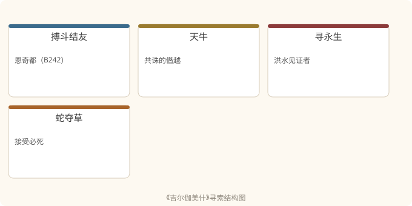

吉尔伽美什史诗
一、基本信息
| 作者 | 美索不达米亚多代文人层累而成（作者不可考） |
|---|---|
| 成书/出版 | 'often cited as the earliest significant work of surviving literature'（Britannica）；最完整文本为尼尼微出土12块阿卡德语残板（Britannica） Epic of Gilgamesh — Encyclopaedia Britannica（百科全书） |
| 国别/地区 | 美索不达米亚 |
| 时代 | 古代 · 美索不达米亚（最完整文本约公元前7世纪） |
| 体裁 | 史诗 |
| 语言 | 阿卡德语 |

《吉尔伽美什》寻索结构图（主题·结构图）
二、创作背景
Britannica：'an ancient Mesopotamian poem in Akkadian about Gilgamesh, a part-divine king of Uruk who quests for immortality after his friend Enkidu dies'（半神乌鲁克王在挚友死后寻求永生——B242）；'often cited as the earliest significant work of surviving literature'（常被引为存世文学中最早的重要作品——B242）。
文本（B242）：最完整者为尼尼微亚述巴尼拔图书馆出土的'12 incomplete Akkadian-language tablets'（12块残板）。
三、内容脉络
为驯服暴君，神造恩奇都；二人搏斗后结为挚友，共诛天牛（B242 转述）。
恩奇都之死→吉尔伽美什寻乌特纳皮什提姆（'survivor of the Babylonian Flood'——B242）求永生（B242）。
得青春草又被蛇夺走——接受必死（B242）。
洪水故事与《创世记》的平行（通说待核）。
四、主要人物表
| 人物 | 身份 | 说明 |
|---|---|---|
| 吉尔伽美什 | 乌鲁克王 | 三分之二神性（通说） |
| 恩奇都 | 神造野人 | 挚友（B242） |
| 乌特纳皮什提姆 | 洪水幸存者 | 永生的见证者（B242） |
五、主题与艺术特点
- 死亡与友谊：接受必死的教育（B242）。
- 洪水母题的最早文本之一（通说待核）。
- 城邦记忆的刻写（泥板——通说）。
六、影响与评论
- Britannica：'often cited as the earliest significant work of surviving literature'（B242）。
Epic of Gilgamesh — Encyclopaedia Britannica（百科全书） - 对后世洪水叙事与英雄史诗的原型意义（通说待核）。
Epic of Gilgamesh — Encyclopaedia Britannica（百科全书）
七、阅读建议
难点
- 残板缺文与译本差异。
- 美索不达米亚神名系统。
- 《吉尔伽美什》（译林出版社/商务印书馆版本，通说待核）。
- 英译（Andrew George 版，通说待核）。
先读第1—8块板（友谊与死亡）→ 洪水板 → 第11—12块板。
八、待核实
- 十二块板内容分配核对。
- 古巴比伦旧版（约前18世纪说）与苏美尔五首独立诗歌的谱系待核。
- 中译本信息核对。